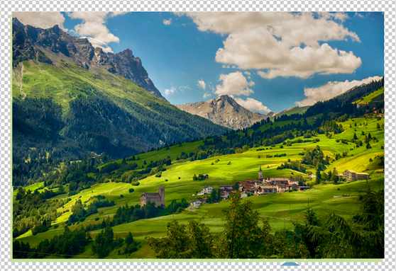

Для этого:
- На панели меню необходимо выбрать вкладку «Редактирование» - «Трансформирование» и далее выбрать «поворот на 180».
- Выделенная область перевернется.
- С помощью инструмента «Перемещение» (V) передвиньте пазл на зеленое поле.
Итоговое изображение должно выглядеть следующим образом:
